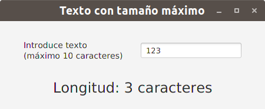

JavaFX
Campo de texto con una longitud máxima
En este ejemplo os he querido mostrar una tarea muy habitual en una aplicación que es restringir el número máximo de caracteres que se introducen en un campo de texto.
Para ello os voy a dejar dos soluciones para la misma tarea:
- La primera hace uso del método setOnKeyTyped para registrar un manejador para el evento producido cuando una tecla se ha pulsado (y se ha dejado de pulsar posteriormente) para el campo de texto. Como curiosidad, podéis ver en el código que si se ha alcanzado el tamaño máximo establecido lo que se hace en el manejador es consumir el evento y no hacer nada con él (bueno, lanzo un pitido para indicar al usuario que algo no va bien) y así el carácter asociado a la tecla no es añadido al campo de texto ya que no permitimos que se propague en la cadena de propagación del evento.
- La segunda hace uso del método addListener de la propiedad de texto asociada al campo de texto y que nos permitirá escuchar los cambios que se vayan produciendo en la misma, de forma que si el nuevo valor ya sobrepasa el tamaño lo sustituimos por el antiguo.
La interfaz de la aplicación es el que muestra la siguiente imagen:

El código asociado a ambas soluciones os lo muestro a continuación.
CampoTextoLongitudMaxima1.java
package javafx.eventos;
import java.awt.Toolkit;
import javafx.application.Application;
import javafx.geometry.Insets;
import javafx.geometry.Pos;
import javafx.scene.Scene;
import javafx.scene.control.Label;
import javafx.scene.control.TextField;
import javafx.scene.input.KeyEvent;
import javafx.scene.layout.HBox;
import javafx.scene.layout.VBox;
import javafx.scene.text.Font;
import javafx.stage.Stage;
public class CampoTextoLongitudMaxima1 extends Application {
private Label lbTexto, lbInfo;
private TextField tfTexto;
private final int MAX_CARACTERES = 10;
private void controlaTamanoTexto(KeyEvent e) {
String texto = tfTexto.getText();
int longitud = texto.length();
if (longitud < MAX_CARACTERES) {
longitud = (Character.isISOControl(e.getCharacter().charAt(0)) ? longitud : longitud + 1);
lbInfo.setText("Longitud: " + longitud + " caracteres");
}
else {
e.consume();
Toolkit.getDefaultToolkit().beep();
}
}
@Override
public void start(Stage escenarioPrincipal) {
try {
VBox raiz = new VBox(20);
raiz.setPadding(new Insets(10));
raiz.setAlignment(Pos.CENTER);
HBox hbTexto =new HBox(30);
hbTexto.setPadding(new Insets(10));
hbTexto.setAlignment(Pos.CENTER);
lbTexto = new Label("Introduce texto \n(máximo " + MAX_CARACTERES + " caracteres)");
lbTexto.setWrapText(true);
lbTexto.setFont(Font.font("Arial", 14));
tfTexto = new TextField();
tfTexto.setOnKeyTyped(e -> controlaTamanoTexto(e));
hbTexto.getChildren().addAll(lbTexto, tfTexto);
lbInfo = new Label("Longitud: 0 caracteres");
lbInfo.setFont(Font.font("Arial", 24));
raiz.getChildren().addAll(hbTexto, lbInfo);
Scene escena = new Scene(raiz, 450, 150);
escenarioPrincipal.setTitle("Texto con tamaño máximo");
escenarioPrincipal.setScene(escena);
escenarioPrincipal.show();
} catch(Exception e) {
e.printStackTrace();
}
}
public static void main(String[] args) {
launch(args);
}
}CampoTextoLongitudMaxima2.java
package javafx.eventos;
import java.awt.Toolkit;
import javafx.application.Application;
import javafx.geometry.Insets;
import javafx.geometry.Pos;
import javafx.scene.Scene;
import javafx.scene.control.Label;
import javafx.scene.control.TextField;
import javafx.scene.layout.HBox;
import javafx.scene.layout.VBox;
import javafx.scene.text.Font;
import javafx.stage.Stage;
public class CampoTextoLongitudMaxima2 extends Application {
private Label lbTexto, lbInfo;
private TextField tfTexto;
private final int MAX_CARACTERES = 10;
private void controlaTamanoTexto(String oldValue) {
String texto = tfTexto.getText();
if (texto.length() <= MAX_CARACTERES) {
lbInfo.setText("Longitud: " + texto.length() + " caracteres");
}
else {
tfTexto.setText(oldValue);
Toolkit.getDefaultToolkit().beep();
}
}
@Override
public void start(Stage escenarioPrincipal) {
try {
VBox raiz = new VBox(20);
raiz.setPadding(new Insets(10));
raiz.setAlignment(Pos.CENTER);
HBox hbTexto =new HBox(30);
hbTexto.setPadding(new Insets(10));
hbTexto.setAlignment(Pos.CENTER);
lbTexto = new Label("Introduce texto \n(máximo " + MAX_CARACTERES + " caracteres)");
lbTexto.setWrapText(true);
lbTexto.setFont(Font.font("Arial", 14));
tfTexto = new TextField();
tfTexto.textProperty().addListener((observable, oldValue, newValue) -> controlaTamanoTexto(oldValue));
hbTexto.getChildren().addAll(lbTexto, tfTexto);
lbInfo = new Label("Longitud: 0 caracteres");
lbInfo.setFont(Font.font("Arial", 24));
raiz.getChildren().addAll(hbTexto, lbInfo);
Scene escena = new Scene(raiz, 450, 150);
escenarioPrincipal.setTitle("Texto con tamaño máximo");
escenarioPrincipal.setScene(escena);
escenarioPrincipal.show();
} catch(Exception e) {
e.printStackTrace();
}
}
public static void main(String[] args) {
launch(args);
}
}